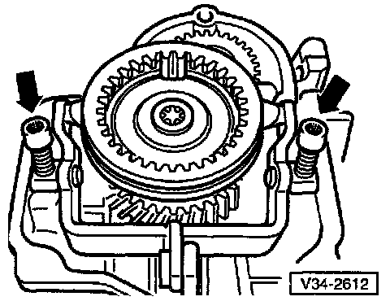
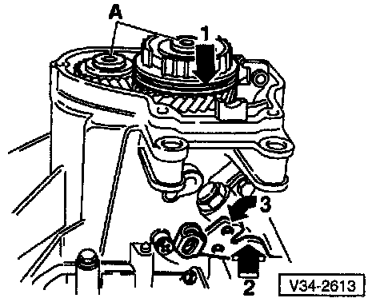
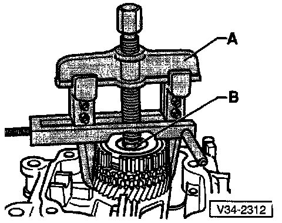
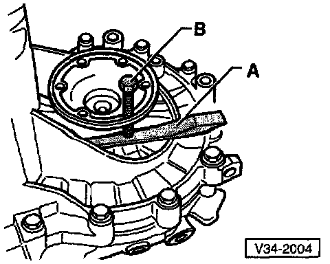
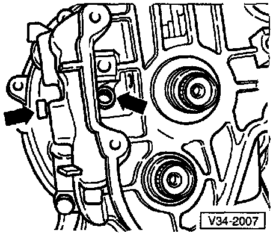
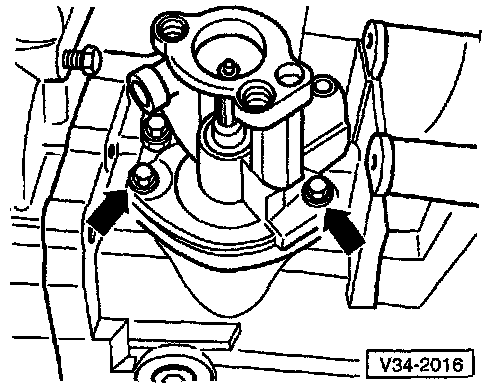
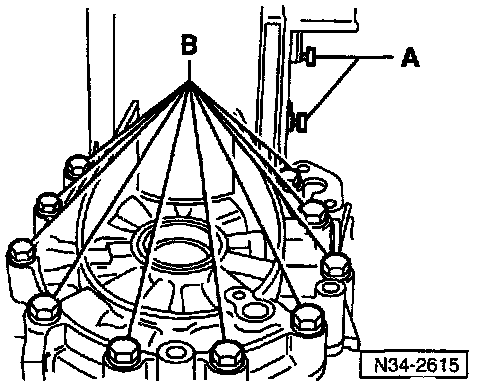
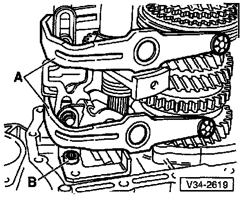

Disassembly of 02A Transmission

- Mount transmission in repair stand
- Drain transmission oil

- Remove clutch release lever, clutch release bearing, and release bearing guide sleeve
- Remove transmission housing cover (arrow)

- Remove 5th gear shift fork (arrow)

- Remove bolts (A) for synchro-hub and 5th gear. To do this, engage 5th gear (arrow 1) and 1st gear (arrows 2 and 3)
- After engaging both gears, the input shaft and the output shaft are both locked, and the synchro-hub and gear cannot turn. Both bolts can now be loosened

- Remove synchro-hub and 5th gear along with needle roller bearing
^ A = Two-arm puller and hooks e.g. Kukko 20/10 with Matra V/170 hooks
^ B = Hex bolt (M1O x 2O)

- Remove 5th gear
^ A = Two-arm puller and hooks e.g. Kukko 20/10 with Matra V/170 hooks
^ B = Hex bolt (M10 x 20)
- Removal sequence:
^ Install two-arm puller as shown and center by turning adjustment screw (arrow)
^ Heat gear using VAG 1416 hot air blower, then pull gear off
NOTE: When removing the gear make sure that the hooks do not bend outward. If necessary tighten screw (arrow). After removing, check 5th gear for damage.

Removing left-side axle flange
- Transmission without springs behind axle flanges:
^ Place chisel or spacer (A) under axle flange and pull flange from differential gears by turning bolt (B) (B) = previously removed housing bolt)
NOTE: If the axle flange shaft fails to come out straight, use two spacers (A), and bolts (B), positioned opposite each other. Tighten both bolts alternately and evenly.
- Transmission with springs behind axle flanges:
^ Remove cone-head bolt before removing axle flange

- Remove bolts (arrows) for reverse idler shaft support bracket
NOTE: For inside bolt (left arrow) use Torx(r) T45 key, 100 mm (4 in) long.

- Shift selector shaft to neutral, then remove bolts (arrows)
- Pull selector shaft assembly with cover from transmission housing

- Remove cover plate (A) and shift fork pivot pins (B) from underside of transmission

- Remove shift fork pivot pins (A) from upper side of transmission
- Remove bolts (B) attaching clutch housing to transmission housing in area of differential

- Remove remaining bolts (A) from inside clutch housing (attaching clutch housing to transmission housing)
CAUTION: Do not yet remove the four nuts (B) for the output shaft bearing support.

- Remove transmission housing
- If housing won't separate, carefully pry up all around on the protruding housing flange (arrows)
CAUTION: Pry gently and evenly, alternating on all sides. Be careful to not damage the sealing surfaces.

- Remove shift forks (A) together with selector plates
- Remove bolt (B) retaining selector mechanism for reverse gear

- Remove nuts (qty: 4) for output shaft bearing support nuts
- Remove reverse gear (A), input shaft (B) and output shaft (C), in that order, from clutch housing
- Remove right-side axle flange shaft
NOTE: Removal procedure for right-side axle flange is the same as the procedure for the left-side axle flange.
- Remove differential